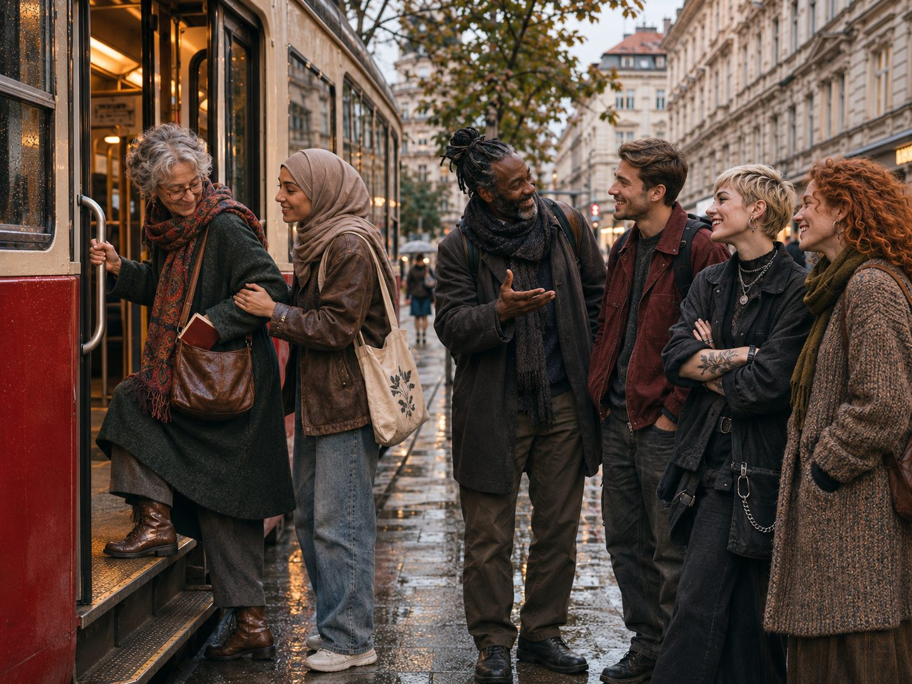

Vielfalt · Titelreportage
Wien im Originalton
Ein Gespräch beginnt mit einem Wort. Im Wiener Alltag kann es in einer anderen Sprache weitergehen. Eine Begegnung in Favoriten eröffnet das Heft.
Vielfalt · Bildung · Ankommen & Wurzeln · Kunst & Kultur · Geschichte & Mythen · Menschen · Leben in Wien · Haltung

Wien im Originalton
01 / Über das Magazin
diVersIENNA erzählt aus Wien: über Vielfalt, Bildung, das Ankommen, Kunst und Kultur, Geschichte und die Menschen der Stadt. Originalstimmen machen die Sprachen der Stadt sichtbar.
Die redaktionelle Handschrift
Ein Mensch. Ein Ort. Eine Frage. Die Geschichte beginnt in einer konkreten Szene. Kurze Originalstimmen erhalten eine deutsche Bedeutung. Am Ende steht eine überprüfte Möglichkeit mitzumachen.
02 / Ressorts
Wiener Stimmen und Wörter im Original. Rubrik: Ein Wort bleibt.
Lernen und Sprache im Alltag.
Migration, Integration, Herkunft. Kolumne: Zuagrast.
Wiener Werkstätten, Märkte und Rituale.
Zwei Serien: Mythologie der Turkvölker und Mythen der Alpen.
Porträt und Interview. Frauenwelt und Sport.
Finanzen im Alltag, Aktuelle Lokale, Hotspot.
Glosse goscherTANTANA und kurze, verschiedene Meinungen.
03 / Aus der ersten Ausgabe
Vielfalt · Titelreportage
Ein Gespräch beginnt mit einem Wort. Im Wiener Alltag kann es in einer anderen Sprache weitergehen. Eine Begegnung in Favoriten eröffnet das Heft.
Ankommen · Kolumne Zuagrast
Vom 700-Seelen-Dorf in die Millionenstadt: Helga Schützelhofer erzählt vom Fremdsein im eigenen Land.
Helga Schützelhofer
Geschichte & Mythen · Zwei Serien
Der altaische Schöpfungsmythos und die Entstehung der Welt in Alpensagen – gleich stark, im gleichen Umfang.
Serhat Suyolcu · Gülnur Ala
Menschen · Interview
Eine Frau in einem Sport, der selten im Rampenlicht steht: Dreiband-Billard. Über Weg, Training und Frauen im Sport.
04 / Inhaltsverzeichnis
05 / Mitmachen
Schicken Sie uns Ihr Lieblingswort aus dem Wiener Alltag – in Ihrer Sprache, mit einer kurzen deutschen Bedeutung. Die schönsten Wörter erscheinen in der Rubrik Ein Wort bleibt.
Briefing, Feedback und ein gestalteter Beitrag mit Namensnennung. Ein Vorschlag in drei Sätzen: Person, Ort, Frage.
Unterstützen Sie eine klar umrissene Wiener Produktion – mit vereinbarter Sichtbarkeit und einer Auswertung zur Resonanz.